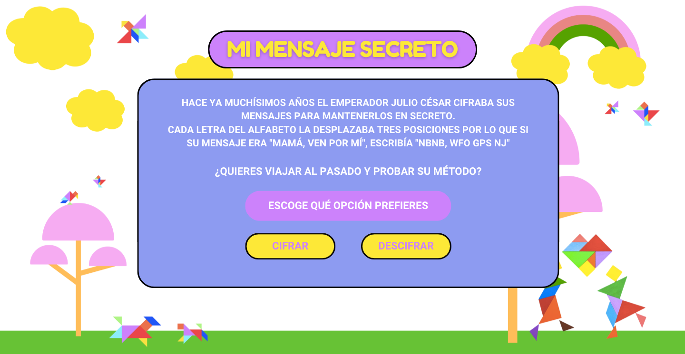
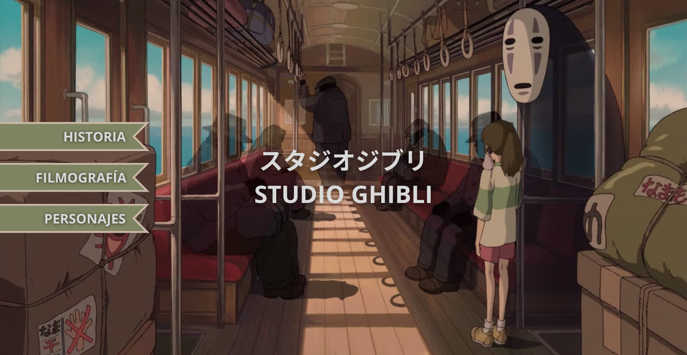
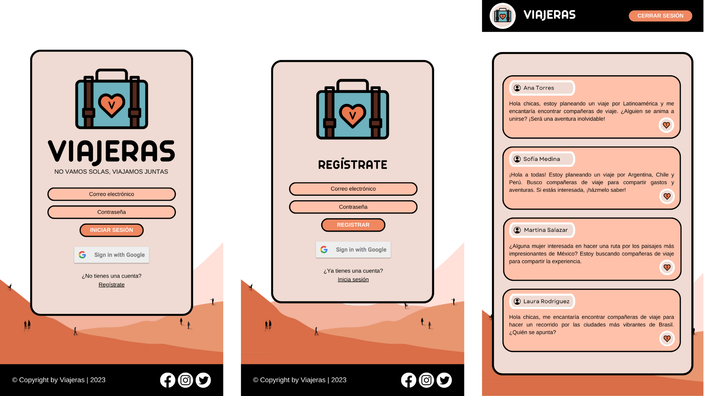
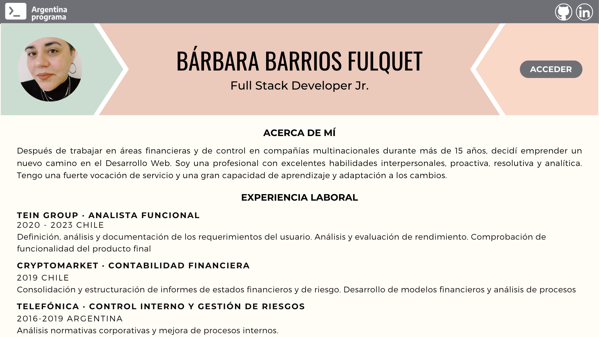

<div class="container-fluid">
    <div class="row">
        <h1>PROYECTOS</h1>
        <hr class="custom-divider">
        <div class="container">
            <div class="col-9 first">
                <h2>Mi mensaje secreto · Laboratoria</h2>
                <h3>Laboratoria</h3>
                <p>Diseñé y desarrollé una página web interactiva que permite a los/as usuarios/as cifrar y
                    descifrar mensajes. Dirigido a niños/as de hasta 8 años, esta herramienta promueve la escritura
                    espontánea
                    y creativa ofreciendo una experiencia de mensajería secreta.</p>
            </div>
            <div class="col-2 offset-md-1 second">
                
            </div>
            <div class="col-9 first">
                <h2>Data Ghibli Lovers</h2>
                <h3>Laboratoria</h3>
                <p>Desarrollamos en equipo una aplicación web que brinda una experiencia sobre la historia,
                    filmografía y personajes del Studio Ghibli. El proyecto incluye secciones dedicadas a la
                    historia del estudio,
                    una detallada filmografía con filtros y descripciones de cada película, y un sección dedicada a
                    los personajes, con imágenes y datos relevantes.</p>
            </div>
            <div class="col-2 offset-md-1 second">
                
            </div>
            <div class="col-9 first">
                <h2>Viajeras</h2>
                <h3>Laboratoria</h3>
                <p>Desarrollé una red social enfocada en mujeres que desean compartir, organizar y comunicarse con
                    otras viajeras. La plataforma facilita el registro, inicio de sesión y publicación en la red, la
                    edición y eliminación de publicaciones.</p>
            </div>
            <div class="col-2 offset-md-1 second">
                
            </div>
            <div class="col-9 first">
                <h2>Mi portfolio web</h2>
                <h3>Argentina Programa</h3>
                <p>Desarrollé una aplicación web full stack con arquitectura distribuida para crear un portfolio
                    personal. Incluye diseño de interfaz de usuario, base de datos para almacenar la información y APIs
                    para acceder a ella. Permite aplicar conocimientos, evaluación y uso como carta de presentación
                    laboral.</p>
            </div>
            <div class="col-2 offset-md-1 second">
                
            </div>
        </div>
    </div>
</div>